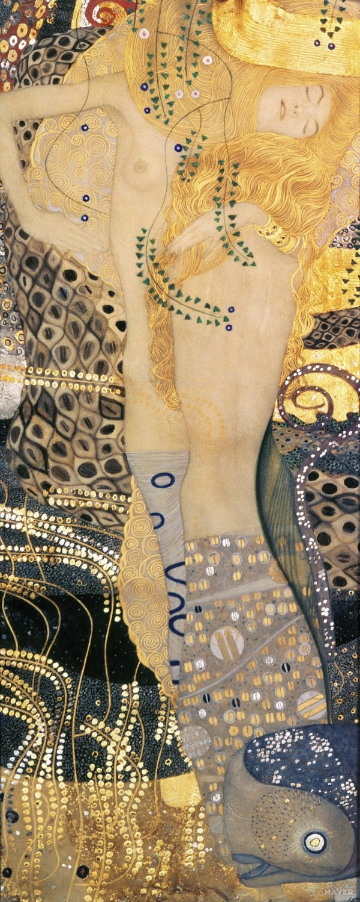

Gustav Klimt
Liebespaar (Kuss) 1907~1908
The Österreichische Galerie Belvedere

Judith I 1901
The Österreichische Galerie Belvedere
Judith II (Salome) 1909
Ca' Pesaro Galleria d'Arte Moderna
Water Serpents I 1904~1907
Österreichische Galerie Belvedere(

Water Serpents II 1904~1907
Private collection